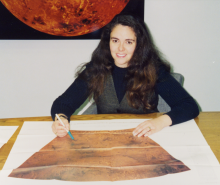

Please note: the AAS Obituaries are temporarily being hosted on this website while their full content is being ingested into the PubPub publishing platform newly adopted by the Bulletin of the American Astronomical Society. When the migration is complete, your existing links will take you to the final, migrated content. Contact peter.williams@aas.org with any questions.
Patricia Grizzaffi Rogers Campbell (1963-2000)
"Trish" Rogers Campbell, a planetary scientist with RAND and NASA, passed away at her home March 9, 2000, after a long and courageous struggle with cancer. She was 37 years old.
Dr. Campbell received her BA in geological sciences in 1985 from Harvard University, where two of her instructors remember her as a bright, enthusiastic, highly motivated young woman. In the spring semester of her sophomore year, Trish took Ursula Marvin's course, "Seminar on the Resolution of Scientific Problems." Rather than attend a few sessions before choosing a topic for her term paper, Trish declared on the first day that hers would be about Mars. She participated effectively in class discussions, even though the other students were juniors and seniors, and she wrote a good paper-on the borderline between B + and A - . Marvin recalls hesitating and then deciding to err (if at all) on the side of generosity. She knew she had made the right decision when she saw how thrilled Trish was with her A - for the course. It was her first independent project in college and, clearly, there would be no stopping her from then on.
The following semester she took John A. Wood's course: "The Solar System," and then expressed an interest in doing a senior honors thesis on planetary geology under his supervision. The title she chose was "A search for temporal changes in morphology of features at the Martian north pole." Her plan was to look for visible changes in the morphology of the polar cap in the images photographed by the Viking orbiters from 1976 to 1979, when the caps went through 1.5 seasonal cycles involving partial evaporation and subsequent reprecipitation of ice, and perhaps other changes. In order to ask for the right photographs, she accessed data that was catalogued on computers using magnetic tapes and the VAX-VMS and FORTRAN programs. Trish worked on the project in Wood's group at the Harvard-Smithsonian Center for Astrophysics in the summer of 1984, and during her senior year. She wrote and presented a good thesis and graduated with honors in June of 1985.
Trish then entered Brown University and earned her MS in planetary geology in 1987. From 1988 to 1991, she worked for RAND in Santa Monica, California, on a variety of planetary science programs, including geodetic control networks for Mars, Mercury, Triton, and Venus, and planning and data analysis for the Magellan mission. She also participated in the development of mission concepts and architectures for the NASA Space Exploration Initiative. In 1991, while remaining a RAND staff scientist, she moved to NASA headquarters in Washington, DC, as a Discipline Scientist in the Solar System Exploration Division. At NASA headquarters, she played a major role in formalizing the science review process that has brought hundreds of promising new, young scientists into the NASA research programs.
Over the next seven years, she successfully managed a number of major research and analysis programs. These included the Venus Data Analysis Program, Origins of Solar Systems Program, and the Planetary Geology and Geophysics Program. She was highly regarded by both NASA management and the science community for her dedication, scientific knowledge, and management skills. As a leader in NASA's Mars Surveyor Program, she served as the program scientist for the Mars Global Surveyor and the Mars 2001 Orbiter and Lander Missions. She was also responsible for all technical and management oversight of the Lunar and Planetary Institute in Houston, Texas. "Trish was a remarkable scientist, respected colleague, and an incredible friend," writes John Grant, a planetary scientist and Planetary Geology Discipline Scientist in the Solar System Exploration Division at NASA headquarters. "Her unselfish efforts were of a tremendous service to the science communities represented by these programs and she will be sincerely missed by the many individuals that she worked with over the years."
While she was fulfilling these very demanding duties at NASA, she also earned her PhD in geophysics from The Johns Hopkins University in 1997 and carried on an active scientific research program. Her dissertation addressed field and modeling studies of fluid dynamical processes in physical volcanology. In 1998, she left NASA for a Distinguished Visiting Scientist appointment at the Smithsonian Institution. Her research interests included Venus and Mars geophysics, volcanism, geologic mapping, and lava flow emplacement dynamics. In each of these areas, she published or collaborated on important papers and contributed numerous unique scientific insights. "The fact that Trish could simultaneously manage multiple programs at NASA, complete her PhD, and do topnotch science is a testament to the breadth and depth of her abilities," notes Grant. Her thesis advisor, Maria Zuber, now of MIT, noted that "Throughout her thesis work and beyond, Trish's research just kept getting better and better. Scientifically, she was on a steeply rising trajectory, but fate conspired to deny her the opportunity to follow through on her many ideas. Planetary volcanology's next generation has lost a major contributor."
Dr. Campbell was a member of the American Geophysical Union, the Geological Society of America, and the American Astronomical Society. An obituary for Dr. Campbell was also published in EOS , Vol. 81, No. 24, 13 June 2000, pg. 269.
Photo courtesy of Bruce Campbell
Obituary written by: Ursula B. Marvin (Harvard-Smithsonian Center for Astrophysics), John A. Wood (Harvard-Smithsonian Center for Astrophysics), Bruce A. Campbell (Smithsonian Institution)
BAAS Citation: BAAS, 2000, 32, 1657
SAO/NASA ADS Bibcode: 2000BAAS...32.1657M